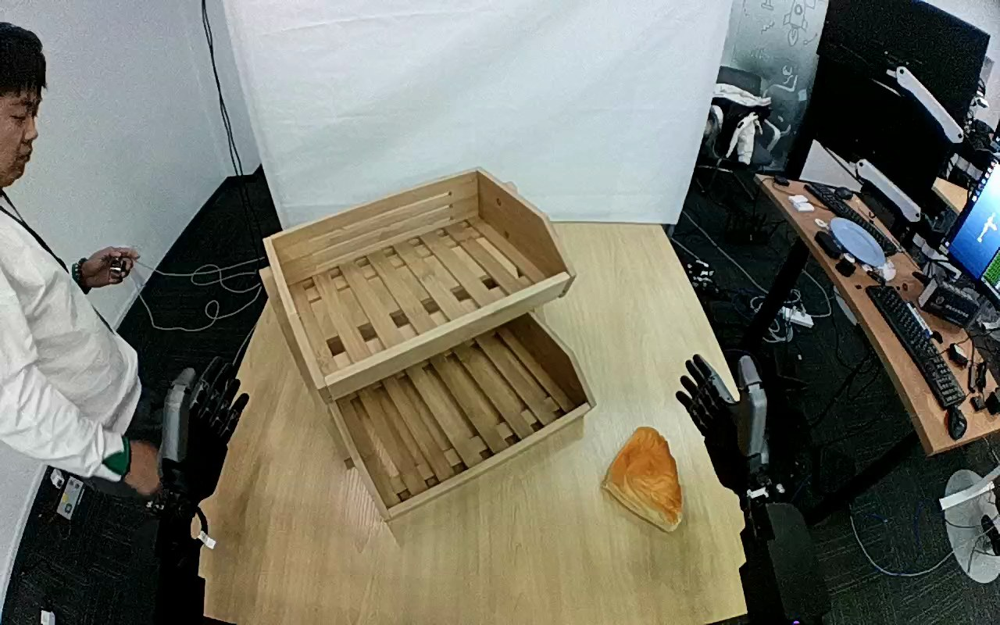

ActionNet · 01JGJXRGT7E3ULU66F
01jgjxrgt7e3ulu66f

Visual review action_review.json
{
"dataset": "ActionNet",
"episode_id": "01JGJXRGT7E3ULU66F",
"prompt_protocol": "humanoid_action_v1",
"prompt_provenance": "visually_authored_from_video_and_initial_frame",
"review_scope": "One dedicated agent reviewed the complete unchanged 420-frame top/rgb.mp4 and the generation first frame. Full single-task sequence retained.",
"source_video": "../../original/top/rgb.mp4",
"conditioning_first_frame": "../first_frame.png",
"generation_video": "../../original/top/rgb.mp4",
"action_prompt": "../actiongeneration_prompt.txt",
"source_frame_start": 0,
"source_frame_end_exclusive": 420,
"fps_rational": "30/1",
"resolution": [
1280,
800
],
"source_annotation": {
"verbatim_task_prompt": "Pick up the bread and place it on the first level of the double shelf.",
"task_prompt_path": "../../original/task_prompt.txt"
},
"anatomical_side_evidence": {
"active_arm": "hand entering from the lower-right edge of the initial image",
"initial_frame_evidence": "Two dark dexterous hands rest upright on forearms entering from the near lower edges, one at lower left and one at lower right of the image. The lower-right hand is the one that reaches the bread. The torso and shoulders are outside the image, so attachment to the body cannot be seen. If the top camera looks forward from the robot's head, the active hand would be the robot's right hand, but this is not independently established.",
"confidence": "Visible-arm identity is unambiguous; anatomical left/right is not independently established."
},
"arm_roles": {
"lower_right_visible_arm": "Sole manipulating hand: rises from its rest pose, lays its thumb on the pastry, curls the fingers around it, bears its weight through lift and transport, lowers it into the lower shelf tray, opens and withdraws to the right.",
"lower_left_visible_arm": "Stays upright and still at the lower-left edge for the whole clip; no contact with pastry or shelf."
},
"coordination": "Single-hand object placement. No hand-to-hand transfer, bimanual stabilization, or regrasp. A person in a white top stands at the left edge and holds a small handheld device, without touching the robot, pastry or shelf; they walk toward the camera side and partly leave the frame late in the clip.",
"chronology": [
{
"frames": [
0,
22
],
"observation": "Both hands rest upright at the lower edges. The golden bread-roll-like pastry lies on the table to the right of the two-tier wooden shelf. The person stands at the left edge."
},
{
"frames": [
24,
46
],
"observation": "The lower-right hand lifts and swings toward the pastry, fingers pointing up and thumb extended toward it."
},
{
"frames": [
48,
70
],
"observation": "The thumb is laid across the upper surface of the pastry; the fingers stay raised beside it. Native frames 40 and 60 show the thumb approaching and then resting on the pastry."
},
{
"frames": [
72,
190
],
"observation": "The hand turns palm-down over the pastry and the fingers curl around it. At native frame 120 the pastry is enclosed between the thumb and curled fingers on the table; it is still on the table in the 168-190 overview tiles and appears to be lifted around frame 190."
},
{
"frames": [
192,
224
],
"observation": "The hand raises the pastry off the table and carries it up and left. At native frame 200 the pastry is held at the lower tray's right edge, and frame 210 it is over the lower tray's near rim."
},
{
"frames": [
224,
330
],
"observation": "Native frame 224 shows the pastry entering the lower tray, still held with the thumb on one side and fingers on the other. Over the following frames the hand lowers it toward the slats of the lower tray and settles it."
},
{
"frames": [
332,
352
],
"observation": "The pastry rests on the lower-tray slats; the hand opens, the thumb and fingers separate from it (native frame 340 shows the thumb beside it, frame 350 the hand lifting off)."
},
{
"frames": [
354,
419
],
"observation": "The hand withdraws to the right edge and then lowers out of the frame area (native frames 362, 368, 374 show the withdrawal; by 380 it is mostly out of the crop). Both hands are upright at the lower edges by about frame 398-419. The pastry stays in the lower tray through the final frame 419."
}
],
"observed_outcome": {
"status": "successful_visible_placement",
"description": "The pastry rests on the slatted floor of the lower tray of the two-tier wooden shelf after the hand opens and withdraws; it remains there through the final frame.",
"selected_action_outcome": "successful_visible_placement",
"source_overall_success_label": "not used to infer outcome"
},
"source_annotation_discrepancies": [
"The source calls the object bread; visually it is a golden, triangular, croissant- or bread-roll-like object. The prompt uses the neutral appearance-based description golden bread roll.",
"The source says the first level of the double shelf. The shelf has a lower, nearer tray and an upper, set-back tray; the pastry is placed in the lower tray, which the prompt specifies as the lower tray. Whether the publisher counts this as the first level is not visually verifiable."
],
"uncertainties": [
"Anatomical left/right is not independently established because torso and shoulders are outside the image; the prompt uses the hand entering from the lower-right edge.",
"Actual food versus prop material cannot be established visually.",
"The exact frames of first table separation and of final contact release are partly occluded by the hand; the chronology intervals bracket visible transitions and were derived from every-second-frame overview tiles plus selected native frames.",
"The top camera view appears fixed; the fixed-camera generation constraint is retained verbatim."
],
"inspection_coverage": {
"total_decoded_frames": 420,
"overview_frame_indices": {
"start": 0,
"stop_inclusive": 418,
"step": 2,
"count": 210
},
"overview_method": "Decoded RGB every second frame into eighteen temporary 4-by-3 contact sheets outside dataset folders; reviewed all sheets.",
"native_resolution_frames": [
0,
40,
60,
120,
190,
200,
210,
224,
280,
330,
340,
350,
356,
362,
368,
374,
380,
398,
419
],
"native_resolution": [
1280,
800
],
"initial_png_inspected_after_full_sequence": true,
"temporary_evidence_location": "/tmp/an_review_01JGJXRGT7E3ULU66F (removed after review; not under generation input)",
"retained_evidence_frame_directories": false
},
"preservation": {
"whole_original_single_task_clip_retained": true,
"crop": false,
"shorten": false,
"resize": false,
"reencode": false,
"source_and_generation_sha256_equal": true
},
"prompt_word_count": 84
}